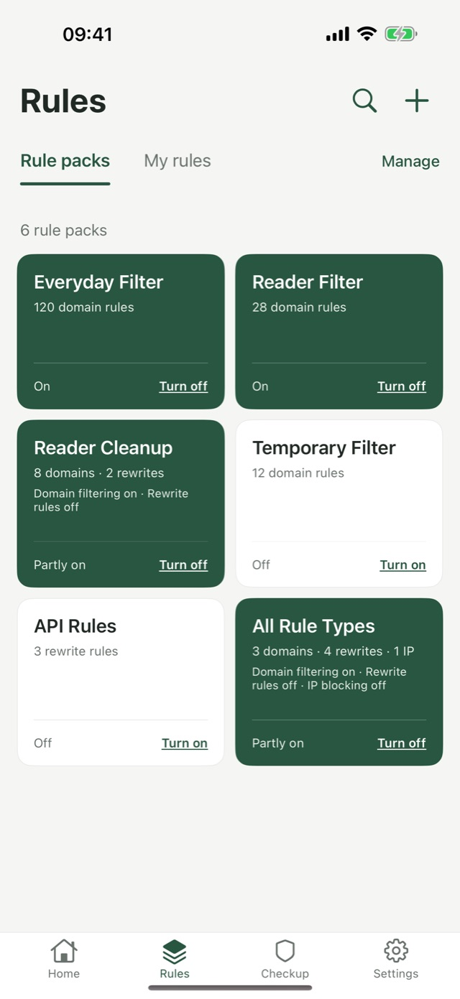
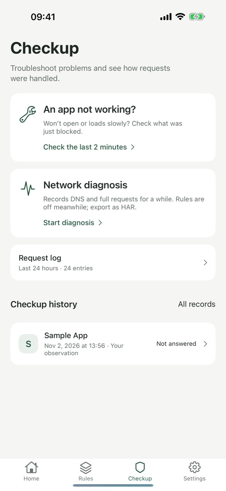
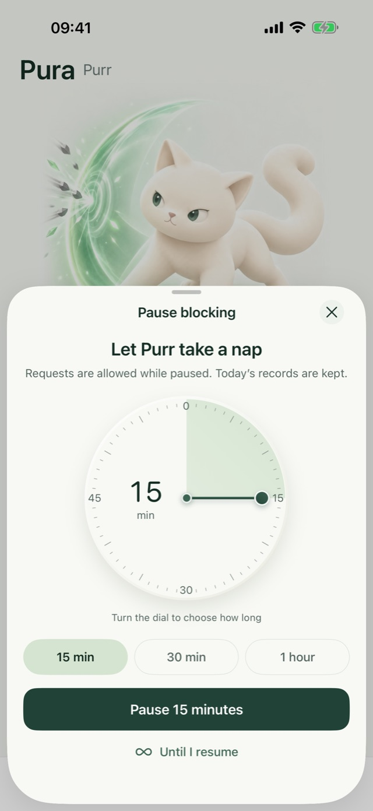

Fewer ads,more calm
Pura blocks ad and tracker domains on your iPhone using the rules you turn on. Everything happens on your device — no accounts, no data collection.
Get started in three steps
Pura ships with no rules. What gets blocked and what gets through is up to you.
Import or add rules
Paste text, pick a file or enter a link to import a rule pack, or add domains to block yourself.
Turn on blocking
Allow the local network configuration, and Pura handles DNS on your iPhone for every app.
Fix it when something breaks
An app won’t load? See what was blocked in the last two minutes and allow what you need.
Your rules, your way
Preview every rule pack before importing: what it blocks, what it allows, and which lines it skips.
- Domain lists, hosts files and other common formats
- Allow rules and a built-in protected list come first, so system and payment services keep working
- Turn each rule pack on or off, and browse every rule

Something broke? Fix it fast
Blocking can catch the wrong thing. Checkup puts recent blocks and the request log in front of you, so you can decide what to allow.
- See domains blocked in the last 2 minutes
- The request log shows how each request was handled
- DNS request recording helps you find domains worth a rule

Pause anytime, resume on its own
Need a break? Turn the dial to choose how long, and blocking resumes by itself. Your Lock Screen and Dynamic Island show the status.
- From 15 minutes to hours, in 5-minute steps
- With no blocking rules on, Pura doesn’t take over your network
- Step-by-step help to stop shake-to-open ads in iOS Settings

Your data stays on your iPhone
Pura has no servers, so there’s nowhere for your data to go. Rules, logs and settings stay on your device.
- No accounts
- Open it and go. Nothing to sign up for.
- No analytics or ad SDKs
- No analytics, advertising or crash-reporting services, and no tracking across apps.
- DNS goes to the resolver you choose
- Lookups that aren’t blocked go to the public DNS service you pick, encrypted when possible.
Free to use, upgrade if you need more
Free
Free forever
- DNS filtering and manual rules
- Rule pack import
- Checkup and request log
- Pause and shake-to-open guide
Pura Pro
One-time purchase, priced on the App Store
- Deep mode: rewrite or reject APIs on domains you confirm, on your device
- Local backup & restore
- All future tool features
Pro unlocks tool features only and includes no rules. Results depend on your rules, your network and how each app behaves; not every ad can be removed.
FAQ
Why do I still see ads?
Pura only blocks domains that match rules you turn on. Ads served from the same domain as content, apps with their own resolvers, or domains your rules miss can’t be separated by DNS. Use Checkup to see real requests, then adjust your rules.
Is Pura a VPN?
Pura uses iOS’s local network extension to handle DNS on your iPhone. It doesn’t route traffic to any server or provide proxy or remote network access.
Why can’t I turn it on without rules?
Pura only takes over your network when it has blocking rules. Import a rule pack or add domains on the Rules tab first.
Is Deep mode safe?
Deep mode is off by default. The certificate is generated on your iPhone and its private key never leaves it. Only domains you confirm one by one are processed, and you can turn it off and remove the certificate anytime.
How do I restore a purchase or get a refund?
Restore purchases in Settings → Pura Pro. Refunds are handled by Apple, from the app or your Apple purchase history.